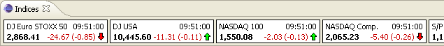
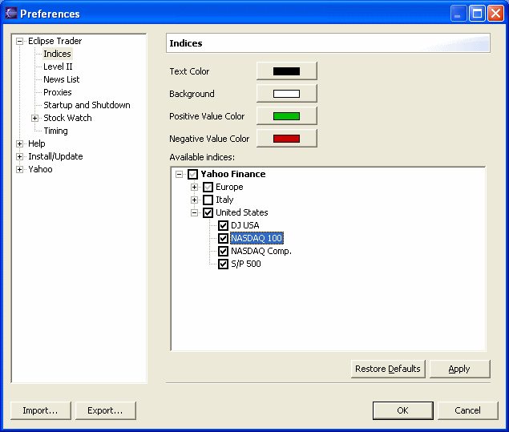

The Indices window is shown by selecting Show Indices from the Window menu.

The window shows side-by-side the data related to the selected indices.
For each index is shown the name (or description), the time of the last update,
the last value and the variation, absolute and percentage, relative to the
previous day's close. An icon shows the variation relative to the previous price
update.
To change the indices window's preferences select Preferences from the Window menu, then Indices from the Eclipse Trader group.

The upper side of the page allows to customize the colors of the index boxes.
The lower side shows a tree-list of all available indices from the various data providers. Selecting an index, with the check box, it will be shown in the Indices window and updated periodically as set with the data provider's preferences.